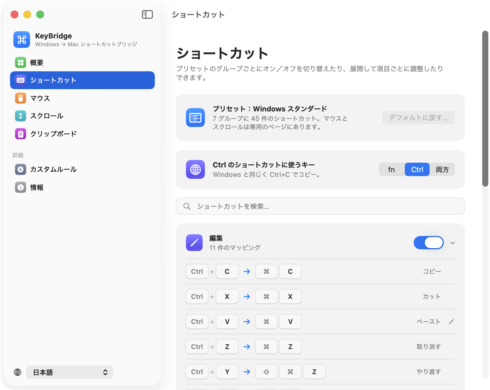

Windows から Mac に乗り換えたあなたへ
Windows のショートカットを、Mac でも。
KeyBridge なら Ctrl+C でコピー、Home と End で行頭・行末へ、マウスのサイドボタンで戻る・進む。長年の指の記憶がそのまま使えます。
無料・オープンソース · macOS 14 以降

指が覚えている操作を、そのまま。
毎日の操作の多くは、Mac では別のキーだったり、そもそも無かったりします。KeyBridge は押したキーを Mac が期待するキーに置き換えます。
| Windows では | Mac では | KeyBridge なら |
|---|---|---|
| Ctrl+C Ctrl+V Ctrl+Z | コピー・ペースト・取り消しは ⌘ | コピー、ペースト、取り消し、保存、検索… |
| Home End | ページの先頭・末尾へスクロール | 行頭・行末へ移動 |
| Ctrl+← Ctrl+→ | デスクトップを切り替え | 単語単位で移動 |
| マウスのサイドボタン | 何も起きない | 戻る・進む |
| Ctrl+スクロール | 画面全体を拡大、または何も起きない | ページをズーム（fn または Ctrl） |
| マウスホイールの向き | トラックパッドと一緒に逆向き | Windows と同じ向き、トラックパッドはそのまま |
| Finder での Delete F2 Enter | Enter で名前の変更、ほかは何も起きない | 削除、名前の変更、開く |
| Alt+Tab Alt+F4 | ⌘+Tab と ⌘+Q | アプリの切り替え、終了 |
| Ctrl+Shift+Esc | 何も起きない | アクティビティモニタを開く |
| PrtScn | 何も起きない | スクリーンショットをクリップボードへ |
| Win+V クリップボード履歴 | 機能が無い | 内蔵、⇧⌘C で表示 |
乗り換えのために、細部まで。
どのキーボードでも
PC 用キーボードでも Mac のキーボードでも使えます。Windows と同じく Ctrl を押すことも、fn を代わりに使って Ctrl を Mac 本来のショートカットに残すことも、両方を使うこともできます。
ターミナルはそのまま
ターミナルや iTerm では、Ctrl+C は今まで通り実行中のプログラムを止めます。Ctrl が別の意味を持つ場所を KeyBridge は知っています。
自由に調整
グループごとにオン・オフ、どの項目も別のショートカットを記録でき、独自のルールも作れます。すべてのアプリにも、特定のアプリだけにも。
マウスとトラックパッドは別々に
ホイールの向きとズームはマウスだけに適用。トラックパッドのジェスチャは Mac のままです。
小さく、静かに
メニューバーに常駐し、ワンクリックで一時停止。システム機能拡張もキーボードドライバも不要です。
あなたの言語で
English、简体中文、日本語に対応。ほかの言語も順次追加します。
Win+V のようなクリップボード履歴。
⇧⌘C を押すと、最近コピーしたものがポインタのそばに表示されます。選べばそのままペースト。
- テキスト・画像・ファイルを検索できる
- よく使うものはピンで固定
- パスワードマネージャのパスワードは記録しない
- 履歴はこの Mac の中だけ、アップロードはしません。オンにするまでは無効です。
2 つのアクセス権と、その理由。
キーの働きを変えるアプリには、macOS がこの 2 つの許可を求めます。
KeyBridge はキー入力を記録しません。押されたキーは、置き換えるショートカットかどうかを判断するためだけに見て、そのまま通します。利用状況の収集も一切なく、コードはすべて公開されています。
KeyBridge を入手。
macOS 14 以降 · 無料
Homebrew でもインストールできます：
brew install --cask lynnjeans/tap/keybridge- KeyBridge を開くと、2 つのアクセス権の設定を順に案内します。
- Karabiner-Elements などを使っている場合は、KeyBridge の使用中は終了してください。同じキーを取り合わないようにするためです。
よくある質問
Mac で Ctrl+C でコピーするには？
macOS ではコピーやペースト、ほとんどのショートカットに ⌘（Command）キーを使います。KeyBridge を入れればすぐに有効になり、Ctrl+C、Ctrl+V、Ctrl+Z、Ctrl+S などが Windows と同じように働きます。ただしターミナルは例外で、Ctrl+C はプログラムを止めるために残します。
Mac で Home と End が行頭・行末に移動しないのはなぜ？
Mac の Home と End は書類の先頭・末尾へのスクロールで、行頭・行末は ⌘← と ⌘→ です。KeyBridge が置き換えるので、Shift+Home、Shift+End、Ctrl+Home、Ctrl+End も Windows と同じように選択・移動できます。
Apple のキーボードでも使えますか？
はい。Control キーは PC の Ctrl と同じ位置にあります。Ctrl を Mac のショートカット用に残したい場合は fn を選び、fn+C でコピーします。
KeyBridge は無料ですか？
無料です。GNU 一般公衆利用許諾書 第 3 版のオープンソースで、誰でもコードを読み、ビルドし、改良できます。
Karabiner-Elements との違いは？
Karabiner-Elements は単一キーの変更やレイヤー作りに強い、高機能なツールです。KeyBridge は「Mac で Windows の習慣を使う」ことだけに絞り、初回起動からすぐ使えて、マウスやホイールにも対応します。システムドライバも不要です。